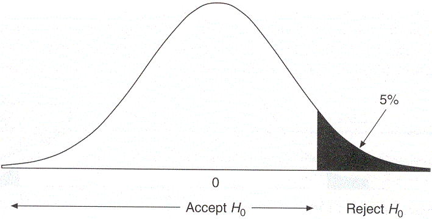

Hypothesis testing is one of the basic things any data scientist may need to perform. It basically means
what it sounds like, you test a hypothesis. Though it is simple, especially if you are using a computer
for computation as there are well written libraries in most languages. However it is important that one has
an overall idea as to what it means and signifies. To properly understand and perform a hypothesis requires
requires knowledge and understanding of many statistical methods. In this blog however, I will only summarize
the whole process and give a brief description of the different types of test ad when to perform which. You
can learn in deep about the statistical methods by going through the courses on descriptive and
inferential statistics which you can find on the resources page
What it means:
By performing a hypothesis test, what we try to prove is that a given sample is significantly different from
a given population. In other words the sample does not belong to the population. To clearify this point, consider
the example of a drug trial. In a drug trial all the people affected by the disease form the population, now the
new drug is a given to a randomly selected sample from the population. Now the drug is effective only if after
its administration the health of the people belonging to the sample is significantly better than the rest of the
population. In other words the sample is significantly different from the population.
For the rest of the tutorial we will follow an example and understand the process of hypothesis testing.
St. Junior high wants to test whether a new
learning technique 'new better technique' is really effective in helping their students learn better or not.
A rather simple way to test this would to introduce this technique to all the students and then see if their was
a significant increase in student understanding of concepts. But this would really be inefficient as it could turn
out that the technique had no effect at all. So they ask you an aspiring data scientist to help them out and just
by looking at their problem you understood that, hypothesis testing is what they need.
But before, you can get started with the analysis you need their help with the following:
Measuring the effect:
You need a way to quantify the effect of the technique. Remember that St. Junior high just wants that
their students just understand the concepts better. There are multiple ways to do this such as: you
can ask teachers to rate student interaction, get students to rate their understanding of concepts, etc.
To be on the safe side you ask the teachers at St. Junior high to quantify the effect and after much
discussion, they agreed upon the age old student grades.
Statistical Significance:
In any kind of study be it experimental or observational, what we do is perform an experiment or give a
treatment to a randomly selected subset of the total population. While random selection does provide us
with some surety that average values of the measured paramters is similar to that of the actual population.
But there is still a chance that subset chosen is really different from the average population. For e.g. in
the St. Junior high case if the random subset selected consisted of all the top performers, then even if
the new technique had no effect the results of the sample group will be significantly better than the school's
average.
So there is a chance that the effect measured by you in any experiment is the result of random sample selection.
To formally specify this uncertainity we decide upon significance level or α-level. A 0.05 α level
means that there is 5% chance of achieving the result by random chance. In other words we are 95% sure that our
result is statistically significant. Popular α values include:- 0.05, 0.01, 0.001. Remember these are just
popular values, one can choose upon any significance level for his or her experiment.
Coming back to the St. Junior high's problem, you deicided upon a 95% confidence interval or 0.05 α level.
One Tailed and two tailed tests:
Now that you have decided upon 0.05 α level, you need to set up your null and alternative hypothesis.
Null Hypothesis (H0): The treatment did not have the desired effect.
Alternative Hypothesis (HA): The treatment had an effect. Here however we need to decide what
exactly we want. Do we just want the treatment to just have an effect, or do
we care wether the effect was positive or negative. If we don't whether the
effect was positive or negative then we go with a two-tailed test, else we
go with a one-tailed test
A thing to note here would be that if we choose the alternative hypothesis to be directional, were we do care
whether the effect was positive or negative. The null hypothesis would change, for e.g. if HA is there
was a positive effect, then H0 simply becomes that there was no positive effect.
Lets now look at what I just said visually:

Directional or one tailed testNon-Directional or two tailed test
In a directional or one-tailed test. We would only accept the alternative hypothesis if the sample would lie in the
shaded regions. We would do the same for a two-tailed test, except here the 5% area would be split equally on both
the tails. As, in the case of St. Junior High school we only care if the new technique had any positive effect,
you decided to go with a positive one-tailed test.
Another way to look at this is
Things to write about:
One Tailed and two tailed tests:
Give a brief introduction to each but perform a test using Z-statistic: